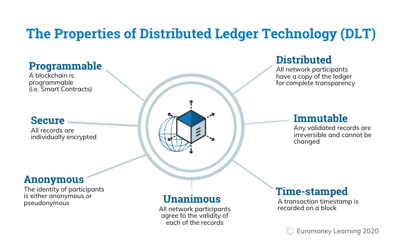

Blockchain
What exactly is a Blockchain?
he validity of each cryptocurrency's coins is provided by a blockchain. A blockchain is a continuously growing list of records, called blocks, which are linked and secured using cryptography.Each block typically contains a hash pointer as a link to a previous block, a timestamp and transaction data
By design, blockchains are inherently resistant to modification of the data. It is "an open, distributed ledger that can record transactions between two parties efficiently and in a verifiable and permanent way". For use as a distributed ledger, a blockchain is typically managed by a peer-to-peer network collectively adhering to a protocol for validating new blocks. Once recorded, the data in any given block cannot be altered retroactively without the alteration of all subsequent blocks, which requires collusion of the network majority.